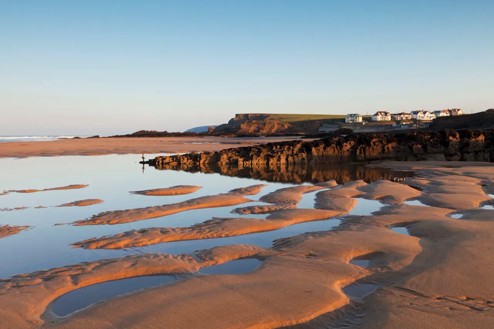
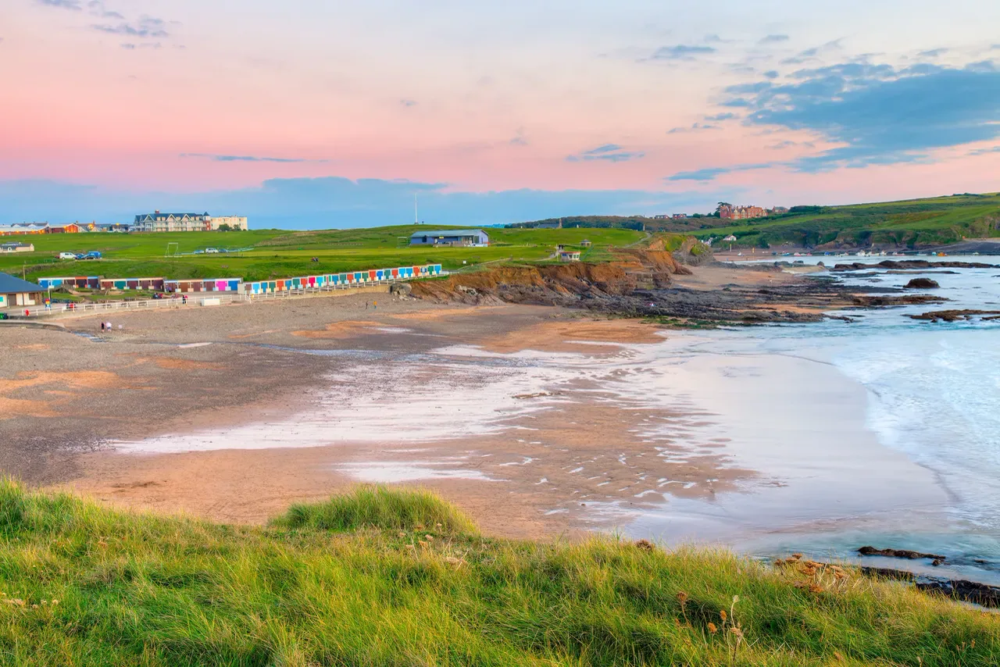

Home / Exploring Cornwall / Hitting the Coast
Nearby Beaches
The finest beaches in North Cornwall
Widemouth Bay
6 minA wide, sweeping bay beloved by surfers and families alike. Surf schools operate here throughout the season. Dogs welcome all year. One of the most accessible great beaches from Whalesborough.

Summerleaze Beach
Bude TownBude's main beach, home to its legendary tidal seawater swimming pool — one of the few remaining in Britain. Surf waves, golden sand, and easy access to Bude town. A genuine Cornish classic.

Crooklets Beach
3 milesBlue Flag awarded beach just north of Summerleaze. Lifeguards during the season, surf hire, rock pools, and a slightly more sheltered feel than the main bay. Excellent for families.
Millook Haven
10+ minDogs welcome all year. Usually quiet thanks to limited parking and no facilities — dramatic cliffs, large pebbles, and genuine wildness. A favourite for those who want to feel like they've discovered something.
Walking
Coastal paths from the doorstep
South West Coast Path
A few miles away
The 630-mile trail from Dorset to Somerset passes close by. The North Cornwall section is among the most dramatic — hidden coves, rare wildlife, and cliff-top views that stay with you.
Hartland Heritage Coast
5 miles away
This 60-mile coastal route features stunning scenery, rare wildlife, historic shipwrecks, sandy beaches, and quaint fishing villages. The Heritage Coast Exhibition is based in Bude's visitor centre.
Whalesborough Estate Trail
On-site · 5km to Widemouth
Walk directly from your cottage door across the estate to Widemouth Bay — approximately 5km. A beautiful route through Cornish countryside that means you can arrive at the beach on foot with a picnic.
Water Activities
More than just sunbathing
The North Cornwall Coast is one of the best surf destinations in Britain. Free Wave Surf Academy, partnered with Whalesborough, runs lessons for all abilities at Widemouth Bay. Sea kayaking, canoeing on the Bude Canal, and open-water swimming at Summerleaze tidal pool are all within easy reach.
Surf lessons
Via Free Wave Surf Academy at Widemouth Bay — all abilities, all ages
Sea kayaking & canoeing
Bude Canoe Experience — "breathtaking scenery and rare wildlife for all the family"
Fishing
Onsite coarse fishing lake plus sea fishing from the rocks at local beaches
More to Explore